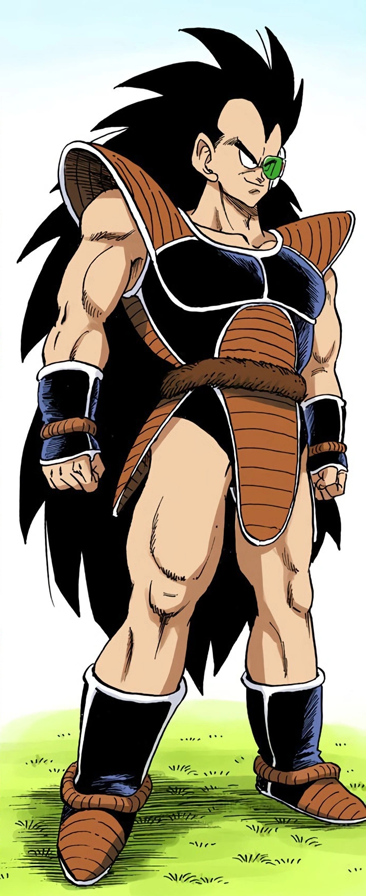

Raditz (ラディッツ Radittsu), also known as "Raditz the Runt", is a mid-class Saiyan warrior, the older brother of Goku and the eldest son of Bardock and Gine.
He is one of the few remaining full-blooded Saiyans left alive after his homeworld was destroyed.
He seeks out Goku in order to recruit him into the Frieza Force to aid in conquering planets.
Raditz is the main antagonist of the Raditz Saga, and the first antagonist in Dragon Ball Z.
Unlike his brother, Goku, his mother, Gine, and his father, Bardock, Raditz is harsh, brutal, and often arrogant like most Saiyan warriors.
He does, however, give his brother a chance to become part of Frieza's empire, only attacking Goku when he refuses and protests against his plans.
He likes to mock weaker opponents, and to mess around with them before actually finishing them off; as shown when constantly mocking Piccolo and taking great pleasure in seeing his own brother Goku and nephew Gohan in pain.
He is incredibly manipulative, begging Goku to let him go when Goku grabs his tail to weaken him.
Goku does and Raditz damages him tremendously and begins to crush his ribs, taunting him whilst laughing.
Raditz can also be quite a coward when facing death, as he kept struggling and begging desperately with his usually arrogant attitude when facing Piccolo's Special Beam Cannon.
Apparently, unlike most Saiyans in general, especially Goku, Raditz fears death greatly.
He was only willing to accept his death when he arrogantly believed his comrades would revive him with the Dragon Balls.
His cowardice might explain his weakness compared to Vegeta and Nappa, as a cowardly Saiyan is unlikely to suffer life-threatening injuries, meaning he would have had fewer opportunities to get a power boost from Saiyan Power like his father and younger brother.
He claims that he wants to anger Goku in order to get his Saiyan blood boiling, so he could realize his Saiyan heritage and get him to join the remaining Saiyans in collecting planets for Frieza.
He is extremely proud of his Saiyan heritage, like Vegeta, and makes many comments on it, even explaining the near extinction of the Saiyans.
He is also very disgusted to learn Goku's tail has been cut off and mocks and ridicules him for forgetting his mission to depopulate the Earth, due to an injury to Goku's head when he was a baby.
He also mocks Goku for becoming soft and becoming a part of the Earth's population.
He seems confident that Goku will join him, Nappa, and Vegeta.
While kidnapping Gohan, he mocks his nephew for crying, telling him he is a Saiyan.
He also has no apparent problem whatsoever killing his brother or his nephew without hesitation in stark contrast to his parents who are shown to value family (especially in the manga).
In some ways, Raditz seems to take after Vegeta for glorifying the Saiyan race and killing anyone who is either a threat or, in the cases of Goku and Gohan, refuses to live up to the expectations of their barbarous lifestyle.
It could be said that his elite Saiyan comrades may have been a bad influence on him due to their strong Saiyan pride and ruthlessness.
Additionally, it is likely that his brutality is partially a result of the surviving Saiyans serving the tyrant Frieza who is also known to have a corrupting influence on those in his employ, thus Raditz may have become just as ruthless in order to adapt and survive working under the remorseless tyrant along with his surviving Saiyan comrades.
Raditz also is very dependent on his scouter, and when a power level gets too high (close to his level, which is 1,500), he assumes it is broken.
Raditz displays a high level of confidence in his power level and strength and is very arrogant.
During his time on Earth, he did not take Piccolo and Goku seriously and severely underestimated them due to their low power reading (This backfired when Goku held him in a Full-Nelson and Piccolo hit him with his Special Beam Cannon).
He also refers to himself as a top-class warrior.
Before dying, Raditz states that he has no doubt Nappa and Vegeta will bring him to life with the Dragon Balls.
Nappa actually does consider using the wish to revive Raditz, but Vegeta instead chooses to wish for immortality, claiming that Raditz deserved to die for his incompetence.
The only instance where Raditz displays a positive side is when he shows genuine grief and remorse for Goku after they have both been hit by Piccolo's Special Beam Cannon, lamenting how Goku would sacrifice himself for what he saw as low-level trash, showing that he did value his brother's life in his own way (In the Viz translation of the manga, he showed no apparent grief but instead seemed to have gained a genuine respect for him).
While he himself did try to kill his own brother, Raditz may have justified it in his mind that at least Kakarot would die at the hands of a fellow Saiyan.
In the Frieza Saga, Raditz is shown to be greatly affronted for receiving no praise from Frieza, Dodoria, or Zarbon after he conquered Planet Shikk along with Vegeta and Nappa.
He was also mortified that Vegeta would abandon avenging his race, especially when rumors escalated in regard to Frieza's involvement in Planet Vegeta's destruction.
This shows that like his parents he cares about his race and that he is eager to avenge them though only with the aid of his Saiyan comrades presumably due to being fully aware he is not strong enough to tangle with Frieza on his own.
It is implied that some of Raditz's more brutal tendencies could be the result of having grown up around the ruthless elite Saiyans Vegeta and Nappa, who tended to think little of Raditz due to his lower battle power - despite Raditz being one of the mid-class warriors, making him stronger than most other Saiyans.
One possible reason for Raditz's coming to Earth was to prove himself useful by recruiting his younger brother (and possibly Gohan once he learned of the boy's existence) giving their group another Saiyan warrior to make conquering planets for Frieza much easier and possibly to one day rebel against Frieza.
His attempts to anger and even kill his brother instead of leaving him in peace may have also been due to him being fully aware that weaker warriors like himself and his brother would not be capable of defeating Nappa and Vegeta who would likely not take to kindly to Raditz if he allowed his brother and nephew to live peacefully on Earth.
This is implied in the What-If scenario Fateful Brothers, in which Raditz loses his memory and ends up bonding with his brother and nephew, only to become conflicted when his memory returns, though ultimately chooses to sacrifice his life by ramming his Attack Ball into Nappa and Vegeta's Attack Balls, killing all three of them.
Before sacrificing himself, Raditz also states that behind Nappa and Vegeta is an even greater monster, referring to Frieza.
On a similar note, the Japanese version of the above scenario also implies he, at least post-amnesia when he regains his memory, felt remorse for his crimes in his past life even before he fought Goku for the last time, but felt he was beyond any chance at gaining redemption due to having committed too many